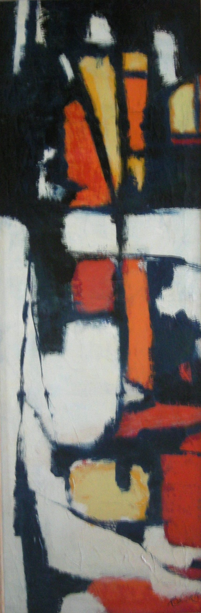

Fra. Roberto Pasotti
b.1933
Artist Biography
Fra Roberto was born in Bellinzona in 1933. In 1954 he joined the Order of the Capuchins, the same year in which he began to paint. Self-taught, he attended the Lugano artist Filippo Boldini's studio and in Basel he was taught stained glass techniques by Hans Stocker. From 1954 to 1966 he lived in the Capuchin convent of Faido. Since 1966 he has been in charge of the Convent of Bigorio. His paintings and stained glass works, which in later years have been more representational than abstract, have been exhibited on numerous occasions, mainly in Switzerland and in Italy but also in Greece, in both mixed and solo shows.

Untitled